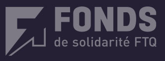

⭐ 50 ans d'expertise
600+ entreprises clientes
8+ secteurs d'activité
Les meilleurs candidats ne postulent pas. On les chasse pour vous.
Depuis 50 ans, St-Amour recrute vos directeurs, gestionnaires et experts dans 8+ secteurs : pharma, industriel, construction, TI, finance et plus. Premiers candidats présentés en 21 jours.
St-Amour : votre partenaire en recrutement spécialisé depuis 1975
1:33
Clic pour visionner · Pas d'engagement
Parler à un recruteur de votre secteur →
Réponse sous 24h · Aucun engagement · Confidentiel
Nos clients satisfaits


Fier partenaire de :
